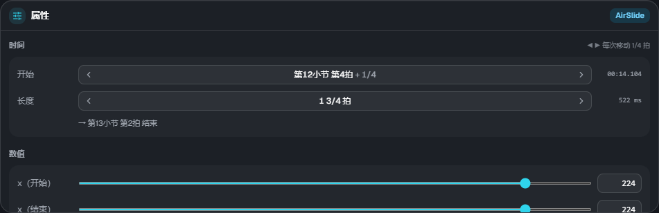
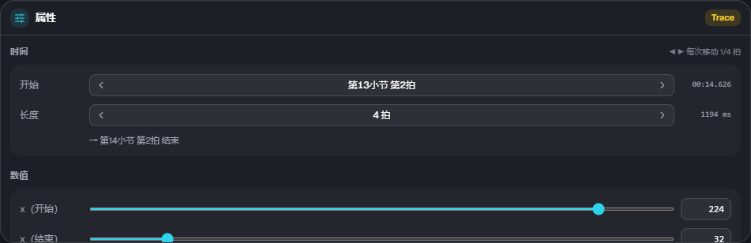

属性与元素
属性

在时间轴上选中一个元素后，可以在右下角的属性中编辑数值。选中多个元素时，会显示选中的数量和操作提示。
时间
- 开始：以「第◯小节 第◯拍＋分数」显示。点击 ◀ ▶ 按拍吸附的步长移动
- 长度：仅限有区间的元素。点击 ◀ ▶ 伸缩。下方显示结束的位置
- 右端显示游戏中的时间（ms）。
lane3d.ex中以这个 ms 写入
数值
用滑块或数字框修改。x・宽度・高度为 0〜255（与地面音符的坐标相同。64 约等于 1 条轨道）。

- 缓动（ease）：0 线性 / 1 缓入加速 / 2 快出减速 / 3 两端平缓
- 组：空中元素和描线可以使用与某个音符组相同的流速（留空则按谱面的 scroll）。→ 流速
颜色（#rrggbb）和 wave 的波长目前无法在 ES3 Studio 中修改。lane3d.ex 中已写好的内容会原样保留。
元素的类型
| 类型 | 轨道 | 内容 |
|---|---|---|
| AirTap | 空中 | 空中判定线上的单点音符 |
| AirLift | 空中 | 保持 x 不变，在地面 ⇄ 空中判定线之间移动的带（上升 / 下降）。长度为 0 时，会在那一瞬间切换（直角） |
| AirSlide | 空中 | 在空中判定线上横向移动的带 |
| Trace | 描线 | 没有判定的装饰线。可以同时改变 x 和高度，所以也能画斜线 |
| Guide | 描线 | 铺在地面上的半透明带（没有判定）。位置和宽度可以变化 |
| 镜头演出（cam） | 镜头 | 倾斜・位置・距离・旋转・缩放等。区间结束后保持结束值（不会自动恢复） |
| 画面特效（fx） | 特效 | 黑场・暗角・噪点・波浪・色差・闪光・震动・故障等 |
元素的详细规则（判定方式・警告的条件等）请参阅皮肤 Extra-Slide v3 的说明。 ES3 Studio 的预览和读取结果中，会显示与游戏相同的警告和忽略信息。